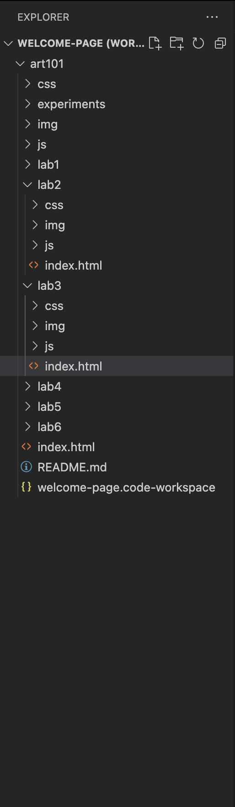

Lab 3 - File Struture & File Transfer
Challenge
The challenge of this lab is to create a file structure and be able to link files on one page. .
Problems
I had trouble understanding how to create a list and link every single lab index file to the main page. But I was able figure it out after understanding the li command.
Reflection
The assignment went really well. I was suprised at how much I was able to understand the file strcuture and organize the page effectively to create a clean product.
Results
My homepage now has links to all my labs, and now includes a picture that I input. It also is beginning to look more like a home page.
